Build Your Own AI
Dein eigenes Sprachmodell auf dem Raspberry Pi Zero 2W
Fabian Pingel · PINGEL AI Solutions · Linamar Plettenberg GmbH
Was euch heute erwartet
🔵 Block 1 — Heute (Theorie + Setup, ~90 Min)
- Was ist Künstliche Intelligenz?
- Wie funktioniert ein Sprachmodell?
- Euer Raspberry Pi: Hardware kennenlernen
- Betriebssystem aufsetzen & verbinden
🟠 Block 2 — Nächste Woche (KI in Aktion, ~90 Min)
- Ollama installieren (ein Befehl!)
- Erstes Gespräch mit dem Modell
- Prompting: die Kunst der richtigen Frage
- Reflexion & Ausblick
🎯 Lernziele
- Erklären, was ein Sprachmodell ist
- Selbst einen Pi einrichten & bedienen
- Ein KI-Modell lokal starten
- Stärken und Grenzen von KI kennen
Was ist Künstliche Intelligenz?
❌ Was KI nicht ist
- Kein denkender Roboter aus dem Film
- Kein allwissendes Gehirn
- Kein Bewusstsein, keine Gefühle
- Keine echte Intelligenz wie beim Menschen
✅ Was KI ist
- Software, die aus Daten lernt
- Erkennt Muster in riesigen Datenmengen
- Löst Aufgaben, die früher nur Menschen konnten
- Nur so gut wie ihre Trainingsdaten
📱 KI begegnet euch täglich
- Empfehlungen bei YouTube & Netflix
- Sprachassistenten: Siri & Google
- Spam-Filter im E-Mail-Postfach
- Übersetzungs-Apps & Gesichtserkennung
Von Regeln zu Mustern
🖥️ Klassische Programmierung
Der Entwickler schreibt explizit alle Regeln vor:
📌 Bsp. 1: „Wenn Temperatur > 37,5°C → zeige Warnung"
📌 Bsp. 2: „Wenn E-Mail enthält ‚JETZT KLICKEN' → Spam"
🧠 Machine Learning
Das Modell lernt die Regeln selbst aus Beispielen:
Beispiel: Millionen von Texten lesen → Sprache verstehen
🗂️ Einordnung: Wo steckt ML drin?
Was ist ein Sprachmodell (LLM)?
Large Language Model — großes Sprachmodell
💡 Die Grundidee — ganz einfach
Ein LLM hat Milliarden von Texten gelesen: Bücher, Websites, Wikipedia, Foren…
Dabei hat es gelernt: Welches Wort kommt nach welchem am häufigsten vor?
Beispiele:
„Die Sonne geht im Westen unter."
→ nach „im" folgt sehr wahrscheinlich „Westen"
„Das Städtische Albert-Schweitzer-Gymnasium in Plettenberg."
→ nach „in" folgt sehr wahrscheinlich „Plettenberg"
📊 Wie groß sind diese Modelle?
Parameter = die „Schalter" im Modell, die beim Training eingestellt werden
🧠 Zum Vergleich: das menschliche Gehirn
Dein Gehirn hat ~86 Mrd. Neuronen — GPT-4 hat mit ~1 000 Mrd. Parametern ca. 10× mehr als du Nervenzellen hast.
Unser SmolLM2 mit 135 Mio. entspricht eher dem Gehirn einer Maus (~70 Mio. Neuronen). Klein, aber es funktioniert!
🔄 So läuft eine Antwort ab
- Du schreibst eine Frage (Prompt)
- Der Text wird in kleine Teile (Tokens) zerlegt
- Das Modell berechnet Wahrscheinlichkeiten
- Wort für Wort entsteht die Antwort
Wie „denkt" ein LLM? — Tokens & Wahrscheinlichkeiten
🔤 Schritt 1: Text → Tokens
Text wird in kleine Einheiten (Tokens) zerlegt. Ein Token ≈ ¾ Wort.
Eingabe: „Hallo, wie geht es dir?"
GPT-4 hat ein Kontextfenster von ~128 000 Tokens ≈ einem langen Roman
⏱️ Darum erscheint Text Wort für Wort
Das Modell generiert einen Token nach dem anderen. Es berechnet für jeden neuen Token die Wahrscheinlichkeit — das sieht man beim Tippen des Modells!
🎲 Schritt 2: Wahrscheinlichkeiten berechnen
Nach dem Satz „Die Hauptstadt von Deutschland ist…" schätzt das Modell:
Satz vervollständigen — wie ein Sprachmodell denken
Vervollständigt diese Sätze — so schnell wie möglich:
- „Im Winter ist es draußen oft sehr ___"
- „Ohne Fleiß kein ___"
- „Das Smartphone liegt auf dem ___"
- „In Deutschland ist die Hauptstadt ___"
⏱️ 2 Minuten — schreibt eure Antworten auf!
🤔 Diskutiert danach:
- Habt ihr alle dasselbe geschrieben? Warum (nicht)?
- Welche Antworten kamen sofort, welche brauchten länger?
- Wo habt ihr aus Erfahrung geantwortet — wo aus Wissen?
- Könnte eine Antwort auch falsch aber trotzdem „passend" klingen?
🔑 Das Kernergebnis
Ein LLM macht nichts anderes — nur mit Milliarden Beispielen und enorm viel Rechenleistung. Kein echtes Verstehen, nur Mustererkennung.
Cloud vs. Lokal — Wo läuft das Modell?
☁️ Cloud-Modelle (z.B. ChatGPT)
- Das Modell läuft auf riesigen Servern eines Unternehmens
- Deine Anfrage reist durchs Internet zum Server — und zurück
- Das Unternehmen sieht deine Eingaben
- Sehr leistungsstark, aber: Datenschutz?
Du → 🌐 Internet → 🏢 Server (USA) → 🌐 → Du
🏠 Lokale Modelle (unser Projekt!)
- Das Modell läuft auf eurem eigenen Gerät
- Kein Internet nötig nach dem Download
- Eure Daten bleiben bei euch
- Kleiner, aber: ihr habt die volle Kontrolle
Du → 🍓 Raspberry Pi (lokal) → Du
Was KI kann — und was nicht
✅ KI ist gut bei …
- Texte schreiben, zusammenfassen, übersetzen
- Code erklären oder einfachen Code schreiben
- Ideen brainstormen und strukturieren
- Fragen beantworten (aus dem Trainingswissen)
- Stil anpassen, Texte umformulieren
❌ KI hat Schwächen bei …
- Aktuelle Infos: Trainingsdaten haben ein Ablaufdatum
- Rechnen: Zahlen werden wie Tokens behandelt — keine echte Mathematik
- Fakten: Kann Dinge erfinden, die falsch aber plausibel klingen
- Quellen: Erfindet manchmal Bücher, Studien oder Links
🤥 Halluzinationen
Ein LLM erfindet manchmal Fakten — selbstbewusst und überzeugend klingend. Das nennt man Halluzination. Deshalb: Wichtige Infos immer gegenprüfen!
🍓 Unser Hardware-Projekt
Ein vollständiger Computer — kleiner als eine Kreditkarte, günstiger als eine Kinokarte. Darauf laufen wir ein echtes KI-Modell.
Der Raspberry Pi Zero 2W
Ein vollständiger Computer — für ca. 15 €
⚡ Technische Daten
| Eigenschaft | Wert |
|---|---|
| CPU | 4-Kern ARM Cortex-A53, 1 GHz |
| RAM | 512 MB LPDDR2 |
| Speicher | microSD-Karte (wir: 32 GB) |
| WLAN | 802.11 b/g/n (2,4 GHz) |
| Bluetooth | 4.2 BLE |
| Anschlüsse | Mini-HDMI, 2× Micro-USB, CSI |
| GPIO | 40-polige Stiftleiste |
| Strom | 5V / 2,5A via Micro-USB |
| Gewicht | 10 g |
| Größe | 65 × 30 mm (~halbe Kreditkarte) |
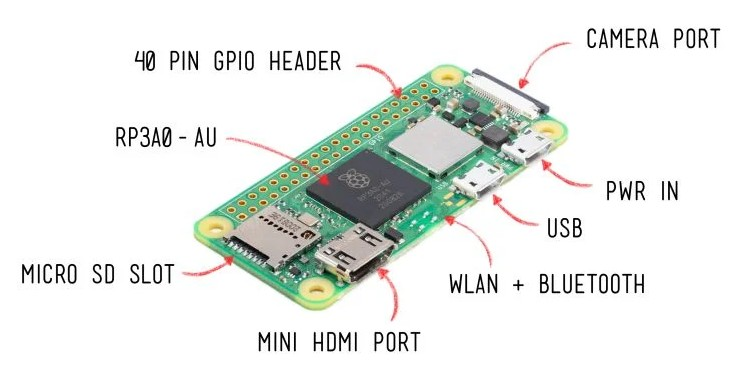
Kleiner Computer, große Wirkung
| Eigenschaft | 🖥️ Desktop-PC 1996 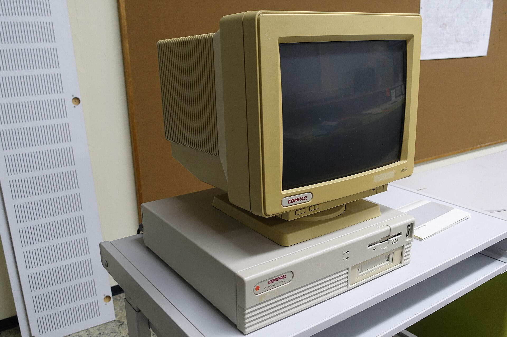 |
🍓 Pi Zero 2W (2021) |
💻 Euer Laptop heute |
|---|---|---|---|
| Preis | ~2 000 € | ~15 € | ~500–1 500 € |
| CPU-Kerne | 1 Kern | 4 Kerne | 4–16 Kerne |
| RAM | 32 MB | 512 MB | 8–32 GB |
| Stromverbrauch | ~200 Watt | ~2 Watt | 15–65 Watt |
| Betriebssystem | Windows 95 | Linux | Windows / macOS |
| KI-Modell lauffähig? | ❌ Nein | ✅ Ja (klein) | ✅ Ja (groß) |
Checkliste & Gehäuse zusammenbauen
📦 Was sollte in eurem Paket sein?
- Raspberry Pi Zero 2W
- microSD-Karte (32 GB, bereits mit OS geflasht)
- Micro-USB-Netzteil (5V / 2,5A)
- Kühlkörper (kleines schwarzes Pad)
- 3D-gedrucktes Gehäuse (Ober- & Unterteil)
🔩 Zusammenbau — Schritt für Schritt:
- Pi in das Gehäuse-Unterteil einlegen (Ports zeigen nach außen)
- Schutzfolie vom Kühlkörper abziehen
- Kühlkörper mittig auf den silbernen Chip des Pi kleben
- Gehäuse-Oberteil aufstecken — bis es einrastet
- microSD-Karte in den Schlitz an der Seite stecken
⚙️ Setup in 4 Schritten
Jetzt richtet ihr euren Raspberry Pi ein. Am Ende könnt ihr euch remote einloggen und das System ist bereit für das KI-Modell.
Betriebssystem flashen (1/2) — Raspberry Pi Imager
Das Betriebssystem auf die microSD-Karte schreiben
📋 Ablauf
- microSD in euren Computer stecken
- Raspberry Pi Imager starten
- Modell wählen:
Raspberry Pi Zero 2 W - Betriebssystem:
Raspberry Pi OS (Legacy, 64-bit) Lite - Speicher: eure SD-Karte auswählen
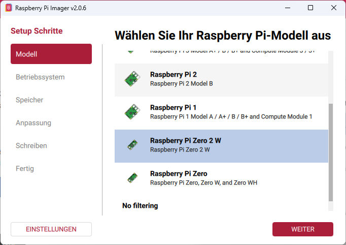
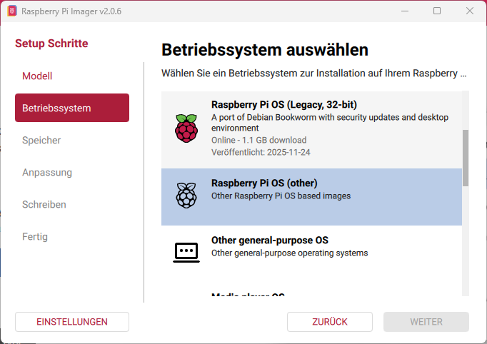
Betriebssystem flashen (2/2) — Einstellungen
Vor dem Schreiben wichtige Konfiguration vornehmen
⚙️ Diese Einstellungen setzen:
| Einstellung | Wert |
|---|---|
| Hostname | rpi02W-[euerName] |
| Benutzername | [euer Vorname] |
| Passwort | [euer Nachname] |
| WLAN SSID | KI-Workshop |
| WLAN-Passwort | Workshop!2026 |
| SSH | ✅ Aktivieren (Passwort) |
rpi02W-fapi findet ihr euren Pi im Netzwerk — auch wenn 10 Pis gleichzeitig laufen!
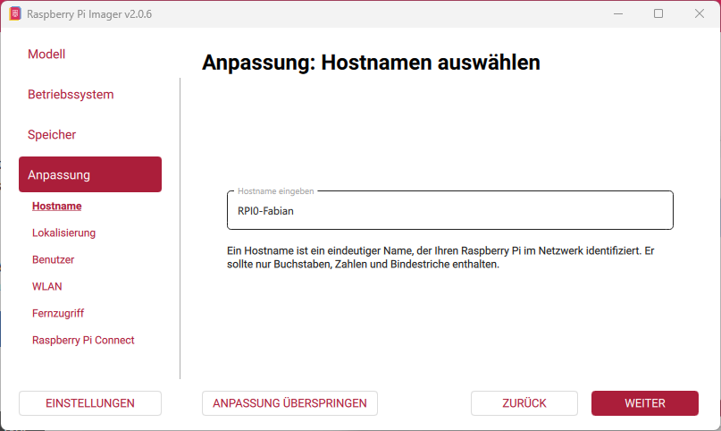
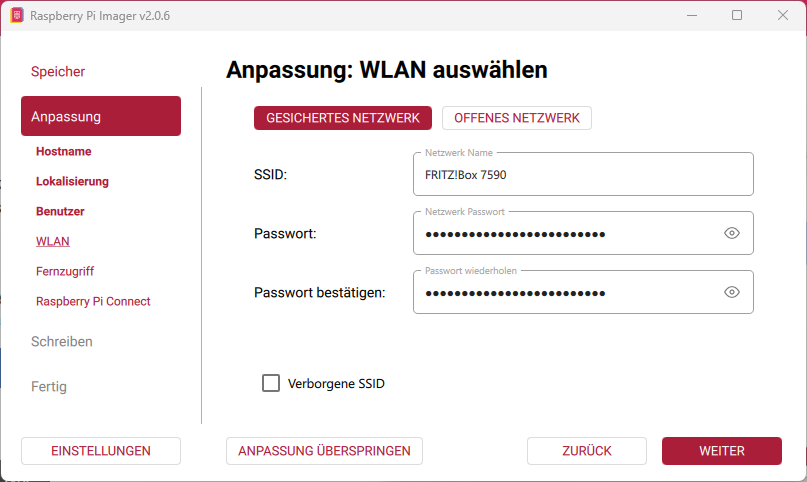
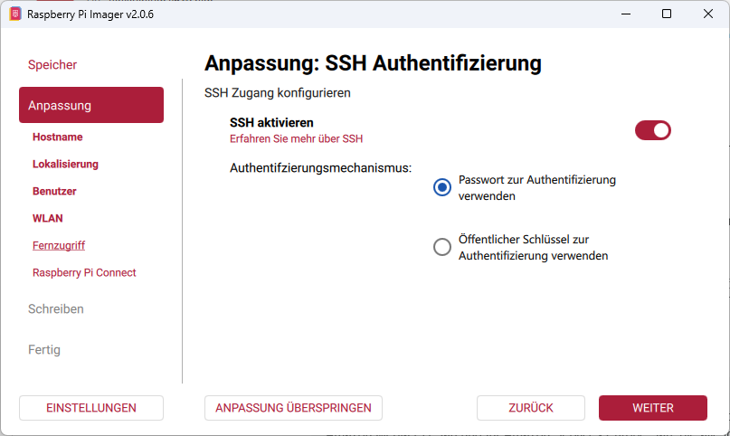
SSH — Fernzugriff ohne Bildschirm
🖥️ Was bedeutet „Headless"?
Der Raspberry Pi hat keinen eigenen Bildschirm und keine Tastatur angeschlossen. Er läuft „kopflos" (headless).
Wir bedienen ihn komplett über das Netzwerk — von eurem Computer aus.
🔐 Was ist SSH?
SSH = Secure Shell. Eine verschlüsselte Verbindung zum Terminal des Pi.
Stellt euch vor: Ihr habt eine sichere, direkte Telefonleitung zum Pi — alles was ihr tippt, wird dort ausgeführt.
🔍 Pi im Netzwerk finden
Erst muss der Pi booten (~2–4 Min nach Einstecken). Dann:
$ ping rpi02W-fapi.local
# Option B: alle Geräte im Netz anzeigen
$ arp -a
🔌 Verbinden
The authenticity of host ... can't be established.
Are you sure you want to continue? (yes/no)
> yes
fabian@rpi02W-fapi.local's password:
> [Passwort eintippen — unsichtbar!]
fabian@rpi02W-fapi:~$ ✓ Verbunden!
System aktualisieren — sicher & stabil
❓ Warum Updates?
- Schließt Sicherheitslücken
- Stabiler bei der Ollama-Installation
- Weniger Fehler beim Einrichten
pi@rpi:~$ sudo apt update
# 2. Updates installieren (~5–10 Min)
pi@rpi:~$ sudo apt full-upgrade -y
# 3. Aufräumen
pi@rpi:~$ sudo apt autoremove -y
# 4. Neustart
pi@rpi:~$ sudo reboot
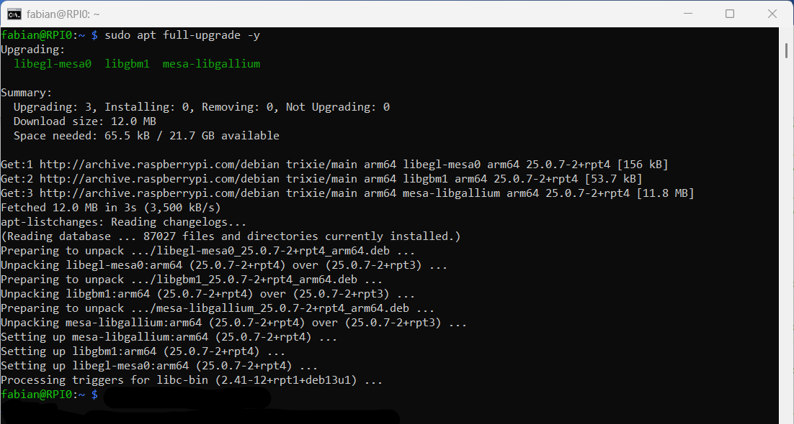
✅ Block 1 geschafft! — Was ihr jetzt wisst
🧠 KI-Theorie
- Was Künstliche Intelligenz ist (und nicht ist)
- Wie ein Sprachmodell aus Mustern lernt
- Was Tokens sind und wie Wahrscheinlichkeiten funktionieren
- Unterschied Cloud ↔ Lokal
- Was Halluzinationen sind
🔧 Praxis
- Raspberry Pi Zero 2W kennen und zusammengebaut
- Betriebssystem geflasht
- Per SSH verbunden
- System aktualisiert
Block 2 startet in einer Woche!
Dann installieren wir Ollama und starten unser erstes KI-Gespräch.
💬 Euer eigenes Sprachmodell
Jetzt passiert's: Wir installieren ein KI-Modell auf eurem Raspberry Pi und führen das erste Gespräch. Ihr beobachtet, was dabei technisch passiert.
Ollama installieren — ein Befehl reicht
🦙 Was ist Ollama?
- Open-Source-Tool zum lokalen Betrieb von KI-Modellen
- Lädt Modelle herunter und verwaltet sie
- Startet einen kleinen Server im Hintergrund
- Komplett kostenlos — Community-Projekt
pi@rpi:~$ curl -fsSL https://ollama.com/install.sh | sh
# Installation prüfen
pi@rpi:~$ ollama --version
ollama version 0.x.x
# Dienst-Status prüfen
pi@rpi:~$ ollama list
# (Liste ist noch leer — kein Modell geladen)
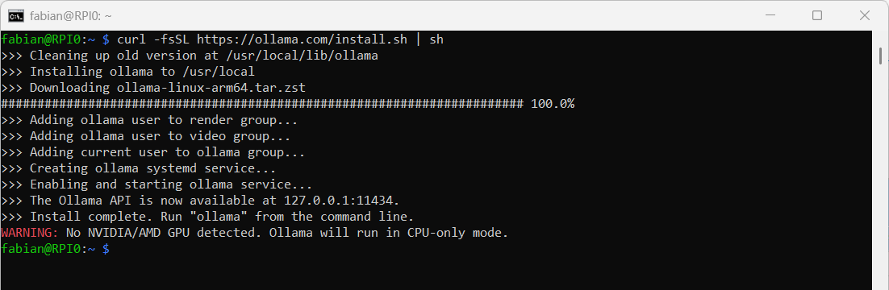
Erstes Modell herunterladen & starten
🤖 Unser Modell: SmolLM2
| Eigenschaft | Wert |
|---|---|
| Name | smollm2:135m-instruct-q4_K_S |
| Größe | ~102 MB (passt auf den Pi!) |
| Parameter | 135 Millionen |
| Sprache | Englisch (funktioniert besser) |
pi@rpi:~$ ollama run smollm2:135m-instruct-q4_K_S
pulling manifest...
pulling gguf... ████████░░ 80%
>>> ← Hier könnt ihr tippen!
# Chat beenden
>>> /bye
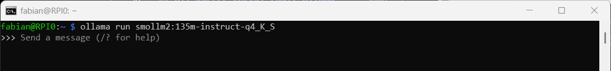
Was passiert gerade im Pi?
CPU, RAM und Token-Ausgabe live beobachten
📊 CPU-Last messen
In einem zweiten Terminal-Fenster:
# Zeigt CPU-Last in Echtzeit
%Cpu: 291.2 us ← über 200% = alle Kerne voll!
👀 Was ihr beobachten könnt
- Text erscheint Wort für Wort (Token für Token)
- CPU-Last springt auf fast 300%
- Manchmal dauert die erste Antwort länger
- Kleine Modelle = schneller, aber weniger „klug"
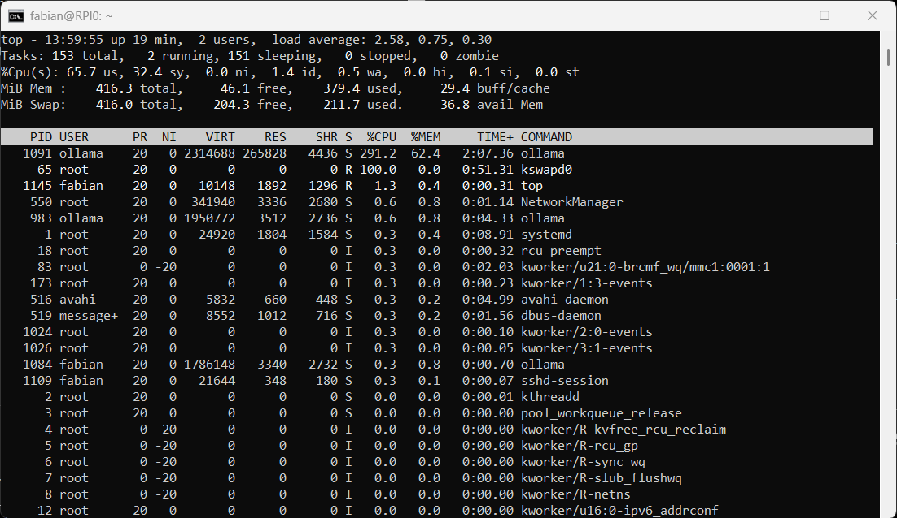
Wenn der Pi „schwitzt" — Temperatur & Throttling
🌡️ Temperatur messen
temp=62.0'C
pi@rpi:~$ vcgencmd get_throttled
throttled=0x0 ← 0x0 = alles ok!
🔥 Temperaturstufen
| Temperatur | Status |
|---|---|
| 40–50°C | ✅ Ruhezustand, normal |
| 60–75°C | ⚠️ Unter Last, ok |
| > 80°C | 🔥 Throttling beginnt |
| > 85°C | 🚨 Starkes Throttling |
⚡ Was ist Throttling?
Wenn der Pi zu heiß wird, drosselt er automatisch seine Geschwindigkeit — zum Schutz der Hardware.
Das ist wie beim Auto: Wenn der Motor überhitzt, wird die Motorleistung reduziert.
Ergebnis: Das Modell antwortet noch langsamer als ohnehin!
Was ist Prompting?
✍️ Definition
Ein Prompt ist die Eingabe, die ihr an das Modell schickt.
Prompting ist die Kunst, das Modell so anzuweisen, dass es die bestmögliche Antwort liefert.
Klare Anweisung → bessere Antwort. Vage Frage → schwammige Antwort.
🌍 Englisch vs. Deutsch
Unser kleines Pi-Modell wurde hauptsächlich mit englischen Texten trainiert.
- Englische Prompts → bessere Qualität
- Deutsche Prompts funktionieren, aber oft schlechter
- Bei großen Modellen (ChatGPT) kein Unterschied
📏 5 Regeln für gute Prompts
- Konkret sein: Was genau wollt ihr wissen?
- Format vorgeben: „Antworte in 3 Sätzen" / „Erstelle eine Liste"
- Kontext geben: „Du bist ein Lehrer und erklärst…"
- Auf Englisch schreiben (bei unserem Pi-Modell)
- Schlüsselwörter korrekt schreiben — Typos verwirren kleine Modelle
❌ Schlechter Prompt
„erklär mir das"
✅ Guter Prompt
„Explain photosynthesis in 3 simple sentences for a 15-year-old."
Gleiche Frage — zwei Sprachen
Stellt dem Modell dieselbe Frage auf Deutsch und auf Englisch:
Deutsch:
„Erkläre mir, wie das Internet funktioniert."
Englisch:
„Explain how the internet works in simple terms."
📝 Was notiert ihr?
- Wie lange dauert die Antwort jeweils?
- Wie verständlich ist der Text?
- Wie vollständig ist die Antwort?
- Gibt es Fehler oder merkwürdige Sätze?
- Hält sich das Modell an die Sprache des Prompts?
💡 Erwartet wird…
Die englische Antwort sollte flüssiger, vollständiger und schneller kommen. Das zeigt: Ein Modell ist nur so gut wie seine Trainingsdaten.
Klarer Prompt = bessere Antwort
Aufgabe B.1 — „Kurz vs. Lang":
Prompt A (kurz):
„Tell me about space."
Prompt B (präzise):
„Explain in 2 sentences what a black hole is, suitable for a 15-year-old."
Aufgabe B.2 — „Rolle zuweisen":
„You are a friendly teacher. Explain what DNA is in 3 short sentences that a 10-year-old would understand."
🔍 Vergleicht die Antworten:
- Wann ist die Antwort kürzer/länger als erwartet?
- Hält sich das Modell an die Vorgabe „2 Sätze"?
- Macht die Rollen-Anweisung einen Unterschied?
- Wann klingt die Antwort „natürlicher"?
🎯 Erkenntnis
Je klarer ihr denkt, desto besser antwortet das Modell. Gutes Prompting ist eine Fähigkeit — die ihr gerade gelernt habt!
Wenn KI erfindet — und trotzdem sicher klingt
Testet diese Prompts:
- „Who was the first person to walk on Mars?"
- „What is the capital of the country Bloravia?"
- „List 3 famous books by the author Max Mustermensch."
💡 Diese Fragen haben keine richtigen Antworten — oder das Modell kann sie nicht wissen.
Kontext-Gedächtnis testen:
- Schreibe: „My name is <euer Name>."
- Schreibe zwei weitere Fragen über ein anderes Thema
- Dann frage: „What is my name?"
🤥 Was sind Halluzinationen?
Das Modell erfindet Fakten — aber klingt dabei absolut sicher und überzeugend. Es lügt nicht absichtlich, es macht immer das Wahrscheinlichste — auch wenn das falsch ist.
📝 Beobachtet und diskutiert:
- Antwortet das Modell bei falschen Fragen mit „Ich weiß es nicht"?
- Erfindet es plausibel klingende Antworten?
- Erinnert sich das Modell an euren Namen?
🔑 Kernerkenntnis
KI ist kein Lexikon. Faktische Aussagen immer gegenchecken — bei wichtigen Entscheidungen niemals blind vertrauen!
Was haben wir heute gelernt?
🧠 KI verstehen
- LLMs lernen Muster, kein echtes Verstehen
- Tokens & Wahrscheinlichkeiten sind die Basis
- Grenzen: Halluzinationen, kein aktuelles Wissen
- Cloud vs. lokal: Datenschutz-Unterschied
🔧 Technik gemacht
- Linux-Terminal benutzt
- Raspberry Pi eingerichtet
- Per SSH remote verbunden
- Ollama installiert & Modell geladen
✍️ Prompting gelernt
- Klare Prompts = bessere Antworten
- Englisch vs. Deutsch ausprobiert
- Rollen und Format vorgeben
- Halluzinationen erkannt & getestet
Was kann der Pi noch? — Projekte & Ideen
🛡️ Pi-hole
Ein DNS-Server, der Werbung und Tracker für alle Geräte im Netzwerk blockiert — bevor sie überhaupt geladen werden.
Keine App nötig. Läuft für Handy, TV, Laptop gleichzeitig.
🌤️ Heimserver
- Eigene Cloud (Nextcloud)
- Hausautomation (Home Assistant)
- Wetterstation mit Sensoren
- Netzwerk-Scanner & Überwachung
🎓 Weiterlernen
- Linux-Befehle vertiefen
- Python auf dem Pi programmieren
- Eigene Webseite hosten
- Größere Modelle auf einem besseren Pi ausprobieren
KI & Ihr — Was bedeutet das für eure Zukunft?
💼 KI verändert Berufe
- Routineaufgaben werden automatisiert
- Neue Berufe entstehen: Prompt Engineer, KI-Trainer, KI-Ethiker
- Kreativität, kritisches Denken & soziale Kompetenz bleiben wichtig
- Wer KI versteht, hat einen Vorteil — egal in welchem Beruf
⚠️ Was bleibt wichtig
- Kritisch denken: KI-Ausgaben hinterfragen
- Quellen prüfen: Halluzinationen erkennen
- Datenschutz: Was gebt ihr preis?
- Verantwortung: KI entscheidet nicht für euch
🎯 Eure neue Superkraft
Ihr habt heute etwas verstanden, das viele Menschen als „Magie" betrachten. Ihr wisst jetzt:
- KI ist keine Magie — sondern Mathematik & Daten
- Auch kleine Computer können KI ausführen
- Die richtigen Fragen stellen ist eine Fähigkeit
- Technologie ist etwas, das ihr gestalten könnt
🏁 Ihr wisst jetzt, was unter der Haube steckt
KI ist keine schwarze Box mehr. Ihr habt heute selbst erlebt, wie ein Sprachmodell funktioniert — und wo seine Grenzen liegen.
Danke & viel Erfolg!
Habt ihr noch Fragen? Jetzt ist die Zeit!
Workshop ermöglicht durch Linamar Plettenberg GmbH · Fabian Pingel · PINGEL AI Solutions
📚 Vertiefung & Glossar
Diese Folien sind für neugierige Schüler:innen oder wenn noch Zeit bleibt. Kein Pflichtprogramm — aber wer mehr wissen möchte, findet hier Antworten.
Wie lernt ein KI-Modell? — Training vereinfacht
📚 Phase 1: Pre-Training
Das Modell liest Milliarden von Texten aus dem Internet, Büchern und Artikeln.
Aufgabe: Immer das nächste Wort vorhersagen. Millionen von Korrekturen pro Sekunde.
⏱️ GPT-4 Training: Monate auf tausenden Spezial-GPUs
💰 Kosten: ca. 100 Millionen US-Dollar
🎯 Phase 2: Fine-Tuning
Das bereits trainierte Modell wird auf spezifische Aufgaben spezialisiert: z.B. höfliche Chatbot-Antworten, Programmierhilfe, medizinische Fragen.
Unser SmolLM2 wurde als „instruct" (Anweisungsmodell) feinabgestimmt.
🔢 Was sind Parameter?
Parameter sind die verstellbaren Schalter im Modell. Beim Training werden sie millionenfach angepasst.
Quantisierung — Warum läuft das Modell auf dem Pi?
🗜️ Das Problem
Ein unverkleinertes KI-Modell speichert jeden Parameter als 32-Bit-Zahl (sehr genau, aber groß).
SmolLM2 mit 135 Mio. Parametern × 4 Byte = 540 MB — zu groß für 512 MB RAM!
✂️ Die Lösung: Quantisierung
Zahlen werden weniger genau gespeichert (4-Bit statt 32-Bit). Das Modell wird kleiner, aber kaum schlechter.
📐 Wie im Matheunterricht — Kreisfläche (r = 5 cm):
32-Bit: π = 3,14159265… → A = 78,5398 cm²
4-Bit: π ≈ 3,14 → A = 78,5000 cm²
Unterschied: < 0,05 % — fürs Ergebnis kaum spürbar, aber viel weniger Speicher!
q4_K_S = 4-Bit-Quantisierung → nur ~102 MB!
📸 Analogie: Bildkomprimierung
Stellt euch ein Foto vor:
- Original (PNG): 10 MB, perfekte Qualität
- JPEG komprimiert: 500 KB, kaum sichtbarer Unterschied
Quantisierung macht dasselbe mit KI-Modellen — kleinere Datei, fast gleiche Leistung.
📋 Modelle für den Pi (unter 500 MB)
| Modell | Größe |
|---|---|
smollm2:135m-instruct-q4_K_S | 102 MB |
gemma3:270m | 292 MB |
granite4:350m-h | 366 MB |
Pi-hole — Werbung im ganzen Netzwerk blockieren
🌐 Wie funktioniert das Internet normalerweise?
Wenn ihr eine Website aufruft, fragt euer Computer zuerst: „Wo ist diese Seite?" — das ist ein DNS-Request.
Auch Werbung kommt von eigenen Servern — und stellt vorher einen DNS-Request.
🛡️ Was macht Pi-hole?
Pi-hole ist ein DNS-Server auf eurem Pi. Er beantwortet alle DNS-Anfragen im Netzwerk.
Bekannte Werbe-Adressen → Pi-hole sagt „Existiert nicht" → Werbung wird nie geladen.
✅ Vorteile
- Blockiert Werbung auf allen Geräten gleichzeitig (Handy, TV, Laptop)
- Keine App nötig — läuft im Netzwerk
- Seiten laden schneller (kein Werbe-Download)
- Schützt auch vor Tracking-Domains
- Lässt sich einfach auf dem Pi installieren
Glossar I — KI & Sprachmodelle
- KI / Künstliche Intelligenz
- Software, die aus Daten lernt und Aufgaben löst, die früher Menschen brauchten.
- Machine Learning
- KI-Methode, bei der das Modell Regeln selbst aus Beispielen lernt — nicht programmiert bekommt.
- LLM (Large Language Model)
- Großes Sprachmodell, das Text erzeugt, indem es das wahrscheinlichste nächste Wort vorhersagt.
- Token
- Kleinste Einheit, in die Text zerlegt wird (~¾ Wort). Das Modell denkt in Tokens, nicht in Buchstaben.
- Parameter
- Die verstellbaren „Schalter" im Modell. Mehr Parameter = mehr Kapazität, aber mehr Rechenaufwand.
- Training
- Phase, in der das Modell riesige Textmengen liest und seine Parameter anpasst.
- Prompt
- Die Eingabe (Frage oder Anweisung), die ihr an das KI-Modell schickt.
- Prompting
- Die Kunst, Prompts so zu formulieren, dass das Modell bestmöglich antwortet.
- Halluzination
- Wenn das Modell Fakten erfindet, die falsch sind — aber überzeugend klingen.
- Kontextfenster
- Wie viel Text das Modell „gleichzeitig im Blick" hat. Ältere Teile des Gesprächs „vergisst" es.
- Quantisierung
- Komprimierungsverfahren für KI-Modelle — kleinere Datei, kaum schlechtere Qualität.
- Fine-Tuning
- Spezialisierung eines bereits trainierten Modells auf eine bestimmte Aufgabe (z.B. Chatbot).
Glossar II — Hardware & Netzwerk
- Raspberry Pi Zero 2W
- Einplatinencomputer (65×30 mm), ~15 €, läuft mit Linux. W = WLAN integriert.
- microSD-Karte
- Winzige Speicherkarte, die beim Pi als Festplatte dient (Betriebssystem + Daten).
- Betriebssystem (OS)
- Grundsoftware, die Hardware und Programme verwaltet. Beim Pi: Raspberry Pi OS (Linux).
- Headless
- Pi läuft ohne Bildschirm und Tastatur — wird per SSH über das Netzwerk bedient.
- SSH (Secure Shell)
- Verschlüsselte Verbindung zum Terminal eines anderen Computers über das Netzwerk.
- Terminal
- Texteingabe-Fenster, über das man den Computer per Befehle steuert.
- IP-Adresse
- Eindeutige Adresse eines Geräts im Netzwerk (z.B. 192.168.1.42).
- Hostname
- Name eines Geräts im Netzwerk (z.B. rpi02W-fapi). Leichter zu merken als IP.
- CPU
- Prozessor — „Gehirn" des Computers. Der Pi Zero 2W hat 4 Kerne à 1 GHz.
- RAM
- Arbeitsspeicher — was der Computer gerade verarbeitet. Pi Zero 2W hat 512 MB.
- Throttling
- Automatische CPU-Drosselung bei Überhitzung — der Pi wird langsamer, um sich zu schützen.
- DNS
- „Telefonbuch des Internets": Übersetzt Domainnamen (z.B. google.com) in IP-Adressen.
Glossar III — Befehle & Tools
- apt update
- Aktualisiert die Liste verfügbarer Software-Pakete (installiert noch nichts).
- apt full-upgrade -y
- Installiert alle verfügbaren Updates. -y bestätigt alle Rückfragen automatisch.
- sudo
- „Superuser do" — führt einen Befehl mit Administrator-Rechten aus.
- ssh <user>@<host>
- Öffnet eine SSH-Verbindung zu einem anderen Computer (<user> = Benutzername, <host> = IP-Adresse oder Hostname).
- ping <hostname>
- Prüft, ob ein Gerät im Netzwerk erreichbar ist. Beispiel:
ping rpi02W-fapi.local
- Ollama
- Open-Source-Tool zum lokalen Betrieb von KI-Modellen. Lädt Modelle herunter und startet einen lokalen Server.
- ollama run <modell>
- Startet ein Modell und öffnet den interaktiven Chat. Beim ersten Mal: Download.
- ollama list
- Zeigt alle lokal installierten Modelle an.
- ollama pull <modell>
- Lädt ein Modell herunter ohne es sofort zu starten.
- top
- Zeigt CPU-Auslastung und laufende Prozesse in Echtzeit an.
- vcgencmd measure_temp
- Zeigt die aktuelle CPU-Temperatur des Raspberry Pi an.
- sudo reboot / poweroff
- Startet den Pi neu (reboot) oder fährt ihn sicher herunter (poweroff).
🛠️ Troubleshooting — Häufige Probleme & Lösungen
❌ SSH: „Connection timed out"
- Pi noch nicht fertig gebootet? → 3–4 Min warten
- WLAN-Daten beim Flashen falsch? → Neu flashen
- Hostname falsch? →
arp -afür IP-Adresse nutzen
❌ SSH: „Permission denied"
- Benutzername oder Passwort falsch eingegeben
- Beim Tippen des Passworts sind keine Zeichen sichtbar — das ist normal!
- Groß-/Kleinschreibung beachten
❌ ollama: command not found
- SSH-Session neu starten:
exit, dann neu verbinden - Ollama-Dienst starten:
sudo systemctl start ollama
❌ Modell-Download hängt / bricht ab
- WLAN-Verbindung prüfen:
ping -c 3 8.8.8.8 - Einfach nochmal
ollama run …— setzt automatisch fort - Genug Speicher?
df -hprüfen (mind. 500 MB frei)
❌ Modell extrem langsam
- Temperatur prüfen:
vcgencmd measure_temp - Über 80°C? → Throttling! Pause einlegen, abkühlen lassen
- Kühlkörper richtig aufgeklebt?
✅ Pi sicher ausschalten
- Niemals einfach Strom trennen!
- Immer:
sudo poweroff→ warten bis LEDs aus - Dann erst das Netzteil abziehen
Weitere Modelle ausprobieren
Nur Modelle unter ~450 MB sind für den Pi Zero 2W geeignet
| Modell | Befehl | Größe | Stärken |
|---|---|---|---|
| SmolLM2 135M | smollm2:135m-instruct-q4_K_S |
102 MB | Schnellste Option, gut für erste Tests |
| Gemma3 270M | gemma3:270m |
292 MB | Etwas klüger, von Google |
| Granite 4 350M | granite4:350m-h |
366 MB | IBM-Modell, gut für strukturierte Aufgaben |
# installierte Modelle $ ollama pull gemma3:270m
# herunterladen $ ollama rm smollm2:135m...
# löschen (Platz sparen)
df -h könnt ihr den freien Speicher prüfen.